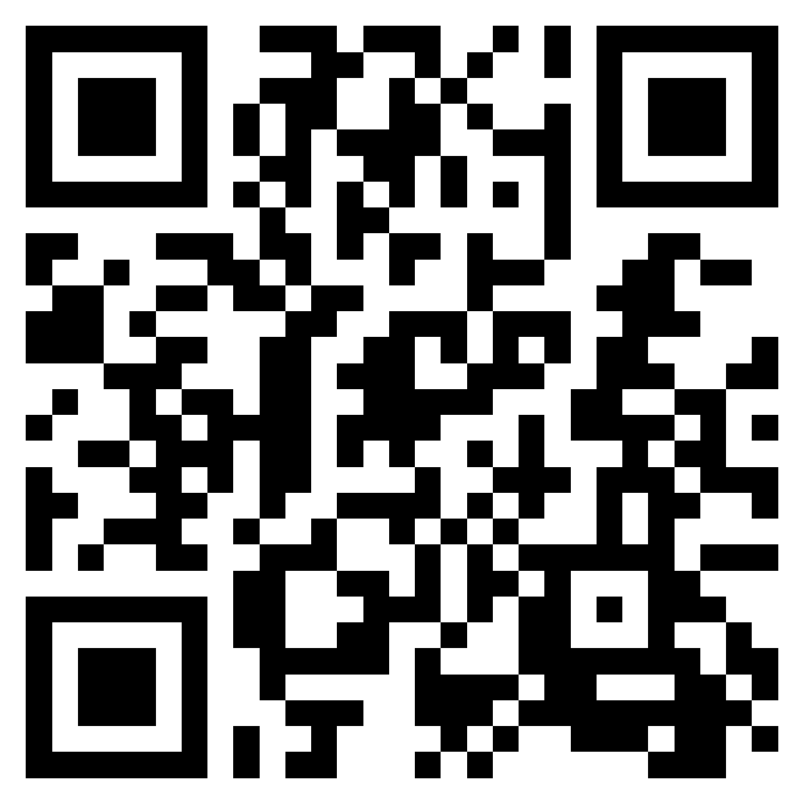
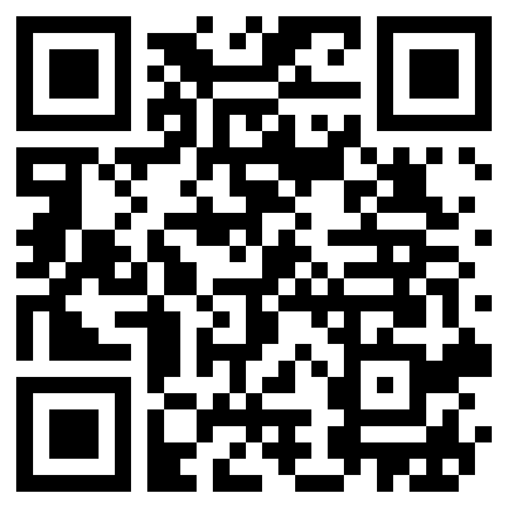

Українцям за кордоном
Фінансова підтримка України:
https://savelife.in.ua/en/donate/ Організація гуманітарної допомоги:
https://sites.google.com/view/shelterforukraine/home Коли ви йдете на мітинг:
Календарі подій відсортований по країнахПублікаційні матеріали. Готові до друку - drive.google.com
- Приходьте на мітинги з синьо жовтими стрічками роздавайте їх місцевим мешканцям, повязуйте на одяг. Усі мають прийти додому з думкою про Україну.
- Організатори і координатори мітингів, позначайте себе жовтою повязкою (скотчем) на лівому плечі. Всі хто приходять на мітинг і хочуть допомогти, повинні чітко знати до кого звернутись. Проявляйте ініціативу, беріть на себе зобовязання, і виконуйте їх.
- Попросіть місцевих друзів зареєструвати петицію в уряди країн де ви проживаєте з вимогою зупинити війну. На мітингах просіть перехожих підписати цю петицію.
- Просіть підтримати україну фінансово. Перед тим як йти на мітинг роздрукуйте QR код, що веде на сайт допомоги україні.
- Координуйтесь з місцевими рухами і просіть їх про підтримку. Це можуть бути студентські брацтва, рух пацифістів, червоний хрест.
- Йдучи на мітинг підготуйте промову, візьміть слово на відкритому мікрофоні і розкажіть про свій біль. Не стимуйте емоцій.
Поради по організації прес служби і координаційних груп у вашій країні.
- Використовуйте кроспостінг подій у всі соціальні мережі і групи в телеграмі чи вотсапі у вашій країні. Події, що ви публікуєте на різних ресурсах не мають конфліктувати і суперечити одна одній. Коодинуйте дії між різними групами.
- Зробіть ваші контакти публічними. Українці вашої країни мають знати як ви виглядаєте, як з вами звязатись і за що ви відповідаєте.
- Організуйте централізовану публічну теку, куди скидуйте всю друковану продукцію яку ви робите. Плакати, листівки, тексти заяв, звернень і прохань мовою країни де ви проживаєте. drive.google.com
- Всі події, що відбуваються у вашій країні повинні бути в одному календарі. Викорисовуйте публічні
календарі для цього. (сalendar.google.com)
Використовуйте наспупний шаблон для публікації подій.
- Місце(з міткою на карті)
- Час початку
- Тривалість, Час завершення
- Контакти організатора
- Опис основної мети події
- Агенду, що буде відбуватись. І яка основна мета
Атака на російські інформаційні ресурси
Користуйтесь тільки якщо ви за кордоном. Не валіть Українську мережу!
Відкрийте посилання нижче і не закривайте сторінку.
https://stop-russian-desinformation.near.page/
Ще один ресурс.
Увага! дана сторінка може споживати багато ресурсів, тому будьте обережні відкриваючи посилання на мобільних
пристроях. Батарея може швидко розрядитись.